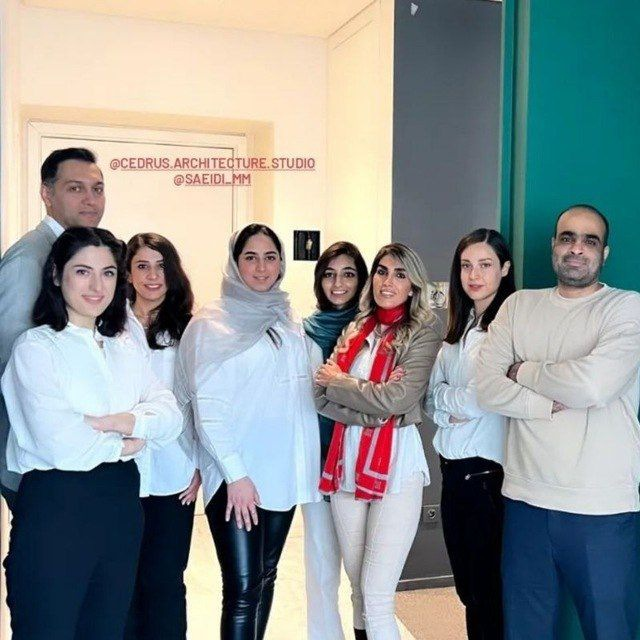

Cedrus Architecture Studio
Selected work from my time as a junior architect at Cedrus Architecture Studio in Tehran: site and environmental analysis, precedent research, presentation graphics, concept animations and residential interiors.
At Cedrus Architecture Studio I worked on housing and building projects, mostly in the early design phases. I started as an intern, building physical models, and stayed on as a junior architect.
My work covered site and environmental analysis and precedent research before design, the graphics and animations that explained each project to clients, and the interior design of residential bedrooms. It taught me how design decisions are actually made in practice, which shapes how I now try to make research useful to designers.

What I Did
01. Predesign Research & Case Study
Before massing, I analysed each site and its surroundings and gathered precedents, so that early design decisions started from the context rather than from form.
- Precedent research across comparable residential projects
- Site and environmental analysis, including sun path and orientation
- Programme studies for early-stage design
02. Illustration & Graphic
I produced the presentation documents that explained each project: diagrams, drawings and visualisations prepared for client reviews.
- Isometric and explanatory diagrams
- Zoning and programme diagrams for client reviews
- Site and context maps
03. Design Development & Concept Animation
I made short animations to explain design concepts to clients, showing how the form was developed step by step and how sunlight moves through the building.
- Step-by-step form development animations
- Walkthrough camera paths
- Sun path animations
04. Interior Design
I designed the interiors of residential bedrooms, from layout to materials and lighting.
- Bedroom layouts and furniture
- Material and colour selection
- Lighting placement
05. Physical Model Making
I started at Cedrus as an intern building physical models of two of the studio's residential projects, a residential apartment building in Sepinoud and Villa No.2 in Zibadasht. Every part was cut and assembled by hand.
- White foam board, cardboard, plexiglass, plastic sheet and balsa wood
- Hand-cut balsa facade louvres, fitted bay by bay
- Interior lighting so the model reads like the built building at night